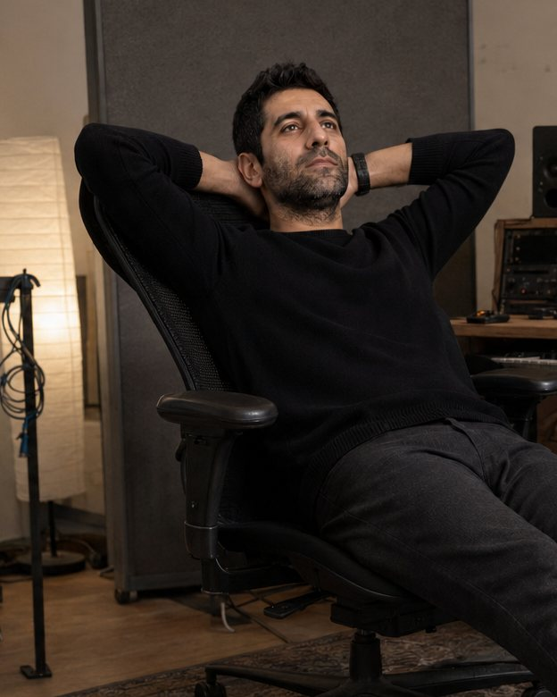
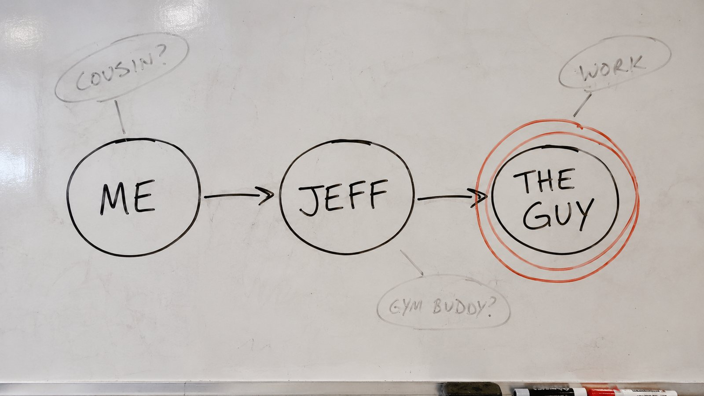
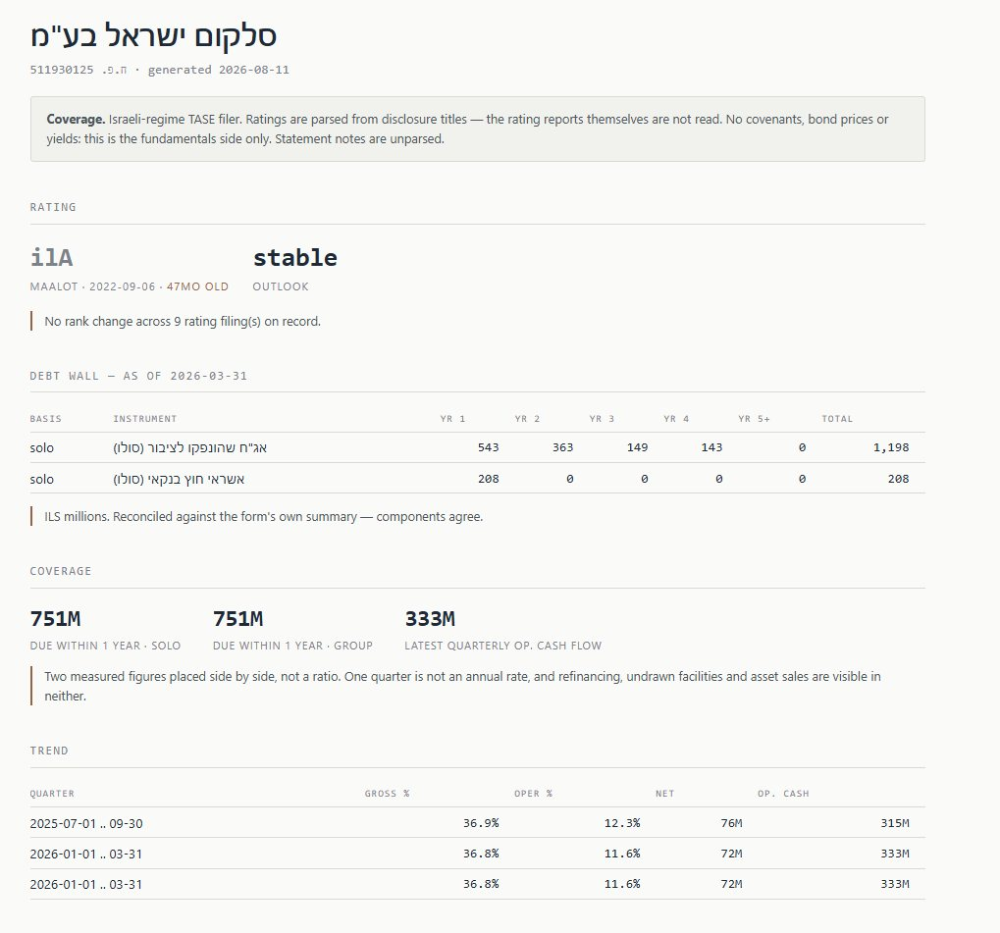
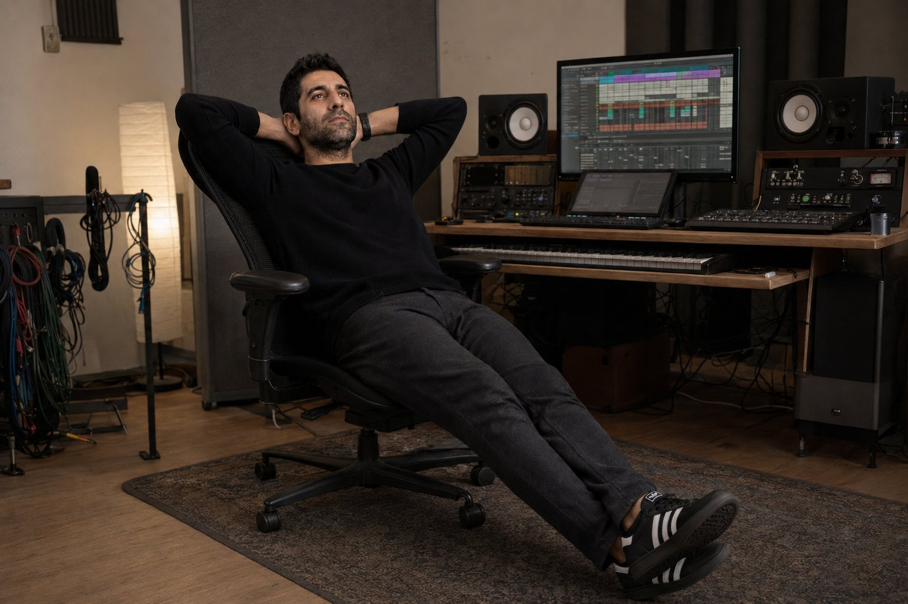

01
TRKR
Smarter tools for fitness coaches.
Training, nutrition, progress and communication, brought together in one branded home - instead of five different tools.

Lawyer. Economist. MBA.
Never particularly interested in staying in one lane.
I’ve been playing piano and drums - and producing music on a computer - for years. Cubase is still where I feel most at home.
In 2014, I flew to Manhattan to study music production at Dubspot, a school dedicated to electronic music and the culture around it.
Under the name Seven Stripes, I’ve produced electronic music, original tracks and remixes. More recently, I’ve also started making what people might call “regular songs” - although I’m still not entirely sure what makes a song regular.
Featured
Silver Lining
Seven Stripes
0:00 / --:--
02 - Marketing & Reputation
That doesn’t mean I avoid digital. Digital is useful, powerful and constantly changing - but it is still another tool in the box.
The foundations of good marketing haven’t changed all that much: understand people, find the right idea, and communicate it in a way they will actually notice and remember.
Over the years, I’ve worked with businesspeople, companies and brands on marketing, creative strategy and reputation - both online and outside it.
The names are private. The work is real.
03 - Things I’m building
I’ve been starting things for more than twenty years. I’m usually drawn to places where something feels unnecessarily difficult, fragmented or outdated - and where a better system ought to exist.
01
Smarter tools for fitness coaches.
Training, nutrition, progress and communication, brought together in one branded home - instead of five different tools.
02
A better way for companies to buy things.
Structured procurement and supplier proposals, without the emails, spreadsheets and vague quotes.
03
Recommendations through people you already trust.
Nobody starts with anonymous reviews. They ask someone they trust - a social system built around that question.

In progress04
Making sense of business information.
Connecting scattered signals and turning them into something you can actually act on.

In progressProject 05 - no relation to the rest of this website
A gross-out collectible card game inspired by the strange, tactile and slightly inappropriate card collections of the 1990s.
A radioactive meteorite mutates forgotten cafeteria food into a legion of sentient monsters that fight for dominance - one greasy, disgusting card at a time.
It’s funny, unpleasant and deliberately hand-drawn, with simple playground-style gameplay and none of the polished digital perfection that makes everything look the same.

I don’t really have one career. I have a collection of things I’ve been curious enough to pursue: music, marketing, reputation, technology, games, and businesses that started with the feeling that there had to be a better - or at least more interesting - way.
These might sound like separate worlds. To me they’re variations of the same thing: finding an idea, giving it a clear form, and putting it in front of people.
Somewhere along the way, I also became a lawyer, an economist, and earned an MBA.
This site is where they all live together.